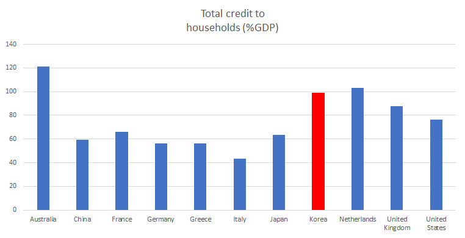
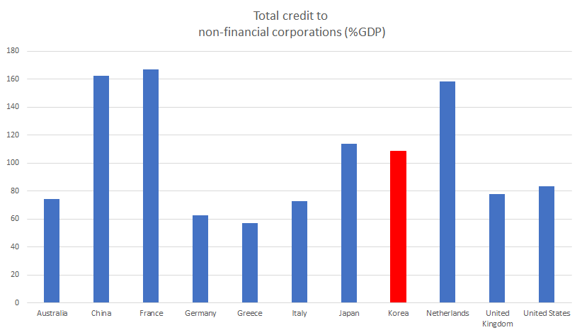
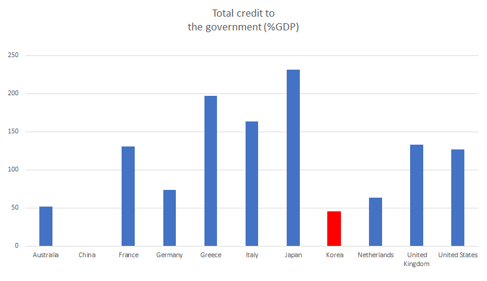
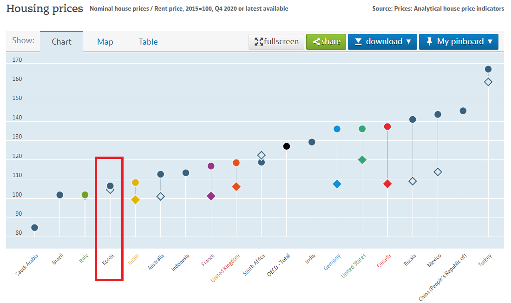
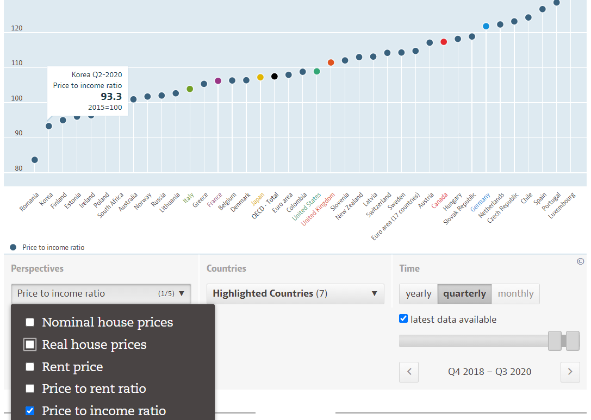

다가오는 인플레와 금리 인상에 대비하라
게시: 2020-12-17T06:30:01+09:00
지난주 금요일인 12/11에 방송된 KBS FM 라디오 오후 4시의 경제 프로그램인 '최경영의 경제쇼'에서 들은 이야기가 흥미로와서 기억나는 것 중에 중요했던 것들을 여기에 정리했습니다. 이 날은 서강대학교 김영익 교수라는 분과의 대담이었습니다. 제 기억이 일부 잘못 되었을 수 있으니 자세한 이야기를 직접 듣고 싶으시면 아래 URL에서 다시듣기를 클릭하시기 바랍니다.
program.kbs.co.kr/1radio/radio/economy/pc/list.html?smenu=c16974
- 리먼 사태 이후 장기 초저금리 상황 때문에 자산 가격에 거품이 발생하고 있다. 출구 전략을 살펴야 할 시기이다. - 전세계적으로 돈을 이렇게 많이 풀면 당연히 발생해야 할 인플레가 발생하지 않았다. - 그 이유 중 하나는 돈을 공급해도 시중에 돈이 돌지 않기 때문이다. 미국은 과거에는 '광의의 통화'가 1년에 9번 돌았는데 올해는 3번 돌았다. 우리나라는 2008년에 28번 돌았는데 올해는 15번 돌았다. - 돈이 돌지 않는 이유는 경기가 좋지 않기 때문이다. 다들 현금을 쌓아두고 '누군가 망하면 줍줍하리라' 라는 상황이다. 우리나라도 기업들의 현금 보유액이 사상 최대치이다. - 인플레가 일어나지 않는 이유 중 또 하나의 중요한 것은 중국이다. - 중국이 저임금을 이용하여 매우 싼 가격에 공산품을 미국을 비롯한 전세계에 공급하고 있다. 그 때문에 생필품 가격이 계속 낮게 유지되고 있다. 그러나 그로 인해 미국은 무역 적자가 심화되었다. - 중국은 그렇게 벌어들인 돈으로 미국 국채를 잔뜩 사들였다. 미국 국채를 그렇게 사들이니 미국 실질 금리가 낮게 유지되었다. - 그러니 그렇게 돈을 풀어도 중국 떄문에 인플레도 낮고, 금리도 낮은 현상이 유지되는 것이다. - 그러나 이대로 가면 얼마 안가 중국의 GDP가 미국을 추월하게 되고, 미국은 그걸 막기 위해 중국과 무역 전쟁을 벌이고 있다. - 중국은 미국 눈치를 안 볼 수 없기 때문에 '쌍순환' 전략을 들고 나섰다. 쉽게 이야기하면 여태까지처럼 수출도 하되, 그건 좀 줄이고 대신 이제 내수 경기를 살리겠다는 뜻이다. - 뜻하는 바는 중국의 값싼 생산품이 이젠 줄어든다는 것이고, 그로 인해 미국을 비롯한 전세계의 물가가 오른다는 것이다. - 또 중국이 미국에서 뜯어내던 달러가 줄어드니, 당연히 중국이 미국채 매입량이 줄어들게 된다. 이건 미국 실질 금리가 오른다는 뜻이다. - 물가가 오르고, 금리가 오르면 그게 인플레이다. - 97년 우리나라 IMF 사태 당시 국가 재정이나 가계 부채는 괜찮은 편이었다. 다만 기업부채가 GDP의 100%를 넘길 정도로 많았다. - 그런데 올해 들어 우리나라 기업부채가 GDP의 100%를 넘겼다. 게다가 IMF 때와는 달리 현재 우리나라 가계부채가 거의 GDP 100%에 근접했다. - 우리나라 경제는 현재는 그런 상황에서도 잘 버티고 있다. 이유는 금리가 매우 낮기 때문이다. - 그런데 위에서 말한 이유와 미국 인구의 노령화 때문에 결국 물가와 금리가 올라갈 것이다. 미국 금리가 오르면 우리나라 금리도 당연히 오른다. - 현재 부동산과 주식 등 자산 시장에 낀 거품은 막대한 통화 공급과 저금리 덕분이다. 금리가 오르면 이 모든 것이 위태로와진다. - 거품이 낀 자산 시장이 연착륙하면 좋겠지만, 자산 시장에 연착륙이란 없다. - 보통 그런 하락기에는 주식시장이 더 빨리 움직인다. 거래가 많기 때문이다. 그러나 부동산 시장에서는 아예 거래가 일어나지 않으면서 가격만 급락한다. - 주식시장은 내년 하반기부터는 금리 인상에 대비하면서 약세가 시작될 것으로 예상한다. - 부동산 시장에서도 실거주 1주택 외에는 슬슬 정리하는 것이 낫지 않을까 한다.
** 아래는 방송 내용이 아니라 제가 덧붙인 것입니다. 흔히 미국은 정부 부채가 문제고, 중국은 기업 부채가 문제이며, 우리나라는 가계 부채가 문제라는 이야기가 있던데 우리나라 가계 부채가 어떤 수준이길래 그런 소리가 나오나 싶어서 검색을 해보니 우리나라 가계 부채가 좀 심한 편이기는 합니다. 부동산 담보 대출이 많기 때문일까요, 아니면 불경기로 인한 생활 자금 대출이 많기 때문일까요? 그런데 중국이나 프랑스처럼 높지는 않지만 우리나라 기업 부채도 꽤 높은 편이네요. 정부 부채만 안정적인 편입니다. 전세계적으로 각국 정부들이 경기 부양을 위해 빚내는 것을 두려워 하지 않고 마구 재정 지출을 하는 상황에서 저렇게 정부 부채가 적다는 것이 꼭 좋은 일인지도 잘 모르겠습니다.
** 아래 그래프에는 G20에 들어가는 주요 국가들을 주로 나열했는데, 작은 나라들이지만 그리스와 네덜란드도 일부러 골라 넣었습니다. 우리나라 보수가 흔히 유럽의 망국으로 매도하는 그리스, 그리고 가진 것이라고는 높은 인구 밀도 밖에 없는 제조업 강소국이라서 우리나라와 닮은 점이 좀 있는 네덜란드는 비교 대상이 될만 하다고 생각했기 때문입니다. 저렇게 부채 비율만 보더라도 네덜란드와 우리나라는 닮은 점이 꽤 많은데, 네덜란드가 모든 면에서 조금씩 더 심각하군요.
  
부채 관련
source : www.bis.org/statistics/totcredit.htm
** 그런데 과연 우리나라 부동산 가격은 거품인가 여부가 또 문제인데, 여기에 대해서는 생각들도 다르고 (특히 다들 이해 관계가 얽혀있으니) 누구의 말도 믿기 어렵습니다. 유럽 왕가들이 전통적으로 근위대는 자국민을 쓰지 않고 외국 용병들을 쓴 것처럼, 이런 민감한 문제는 해외 source를 퍼오는 것이 좋은데, 그래도 믿을 만한 OECD.org의 자료를 보았습니다만... 솔직히 저도 믿어지지 않는 수치가 나오네요. 저 수치는 전국 평균이고, 우리나라는 수도권 아파트 가격만 집중적으로 올랐기 때문에 저런 비현실적인 수치가 나온 것일까요? 다른 나라들도 대도시 위주로 오르지 않았을까 합니다만... 어쩌면 공시지가를 표시한 것일 수도 있겠네요. 아무튼 아래 그래프는 2015년의 주택 매매 가격과 임대 가격을 100으로 봤을 때, 2020년 4분기 현재의 주택 매매가(동그라미)와 임대가(다이아몬드) 수준입니다. 우리나라의 주택 가격 및 임대 가격 상승은 일본보다도 낮다고 합니다. 과연 금리가 인상 되면 주택가격이 과거처럼 폭락하게 될까요? 아니면 우리는 거품이 상대적으로 덜 끼었으니 괜찮을까요? 과거에도 폭락했다가 곧 원상 회복 되었으니 아무 문제 없을 것이라는 생각도 들지만, 이런 초장기 초저금리 상황은 전에 없었던 현상이라는 것을 생각하면 좀 불안하기도 합니다. 아마 정답은 아무도 모를 겁니다.

주택 가격 상승률 source : data.oecd.org/price/housing-prices.htm
**추가 : 아래 늘 좋은 댓글 달아주시는 성북천님의 댓글을 보고 다시 그래프를 살펴보아도 (아마 제 이해도가 떨어져서 그런 것 같습니다만) 여전히 저 OECD의 주택 가격 그래프는 이해가 가지 않네요. 가만 보니 저 위의 그래프에서 보여주는 주택 가격은 nominal house price이고, real house price나 price to income ratio 그래프도 볼 수 있더군요. Price to income ratio를 보니... 오히려 2015년에 비해 2020년엔 더 하락한 것으로 나옵니다 ! 주택 가격보다 국민 소득이 더 많이 올랐다는 거지요. 저로서는 전혀 이해가 가지 않는 통계치이지만, 아무튼 투자를 위해 다주택자가 되신 분들께는 좋은 소식입니다.
